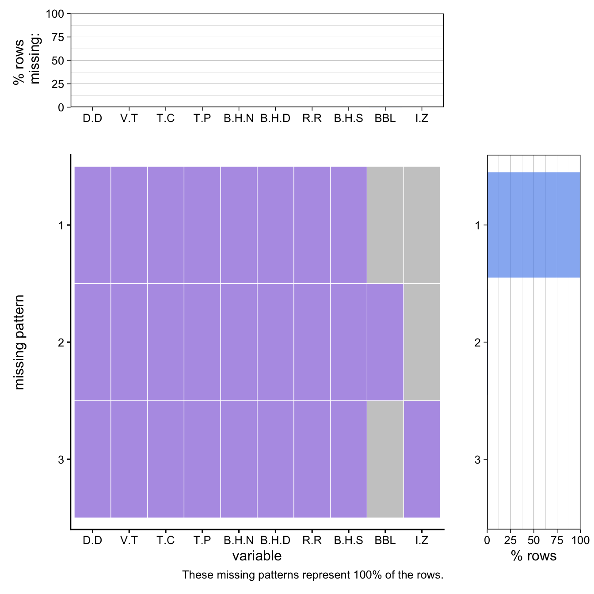

There are 2 dataset links that we will utilize from https://opendata.cityofnewyork.us. It is public data published by New York City agencies and other partners. As per our discussions during proposal approval, we have limited to 2 datasets (earlier we targeted 4) and downloaded filtered data for past 3 years and for Borough “Manhattan”.
The 2 datsets we are making use of from NYC Open Data are
Both the datasets are CSV files in tabular format and they are updated daily. The HPD dataset is published by the Department of Housing Preservation and Development and contains one row per housing code violation, with about 10.4 million rows and 41 columns. It includes things like identifiers (ViolationID, BuildingID, BBL), address and borough, violation class (A/B/C/I), detailed text descriptions, multiple status dates, and basic geography. On the other hand, the 311 dataset is maintained by NYC’s 311 system and has around 41.5 million rows. It has one row per service request and the key fields include a unique request ID, the responding agency, complaint type and descriptor, creation and closure times, and several location fields such as address, ZIP, BBL, and latitude/longitude. We observed that in the 311 documentation that the “Agency Name” column is currently unreliable, so have informed us to use the “Agency” code instead.
Please note, that the entire data was too huge so we did not make use of it entirely and instead filtered it for analysis. For HPD housing violations, we restrict it to Manhattan from the year 2022 onwards and so the dataset has 589,005 rows and 41 columns. Same goes with 311 requests dataset as we filter it for Manhattan and for the same time period. It now has, 425,248 rows and 42 columns. To make the two of them comparable, we created new categorical variables: in the violations data, we used regular expressions on the free text NOVDescription field to assign each violation to a broad issue type (such as HEAT/HOT WATER, PLUMBING, PAINT/PLASTER, WATER LEAK, DOOR/WINDOW/LOCK, or PEST/SANITATION). And so in 311 data we mapped Complaint Type (and, for pest issues, Complaint Type together with Descriptor) into the same set of issue types.
2.1 Key distributions in Dataset
Additionally, we looked at some of the key distributions in the data to have a better understanding (see below). In HPD violations data, the most common CurrentStatus values are “VIOLATION DISMISSED”, “VIOLATION CLOSED”, and “NOV SENT OUT”, with a long list of more specific statuses such as “FIRST NO ACCESS TO RE-INSPECT VIOLATION” and “NOT COMPLIED WITH.” In the 311 data, housing related complaints are mostly dominated by a few Complaint Type categories like HEAT/HOT WATER, PLUMBING, PAINT/PLASTER, and WATER LEAK.
Code
# Librarieslibrary(dplyr)
Attaching package: 'dplyr'
The following objects are masked from 'package:stats':
filter, lag
The following objects are masked from 'package:base':
intersect, setdiff, setequal, union
Code
library(lubridate)
Attaching package: 'lubridate'
The following objects are masked from 'package:base':
date, intersect, setdiff, union
Code
library(janitor)
Attaching package: 'janitor'
The following objects are masked from 'package:stats':
chisq.test, fisher.test
library(forcats)library(stringr)library(redav)# ========== HOUSING VIOLATIONS ==========housing_raw <-read.csv("/Users/shreyashetty/Documents/Fall 2025 Courses/EDAV/Final_Project/edav_project/datasets/Housing_Violations_2022_onwards.csv")# ========== 311 HOUSING COMPLAINTS ==========sr311_raw <-read.csv("/Users/shreyashetty/Documents/Fall 2025 Courses/EDAV/Final_Project/edav_project/datasets/311_Housing_Complaints_2022_onwards.csv")# ========== KEY DISTRIBUTIONS ==========# Use tidyverse counting (no data.table .N)housing_copy <- housing_rawsr311_copy <- sr311_raw# Housing Violations - Top 10 Current Status (showing top 10 since there are many unique values)housing_copy |>filter(!is.na(CurrentStatus)) |>count(CurrentStatus, sort =TRUE) |>slice_head(n =10) |>print()
CurrentStatus n
1 VIOLATION DISMISSED 197906
2 VIOLATION CLOSED 180829
3 NOV SENT OUT 112090
4 FIRST NO ACCESS TO RE- INSPECT VIOLATION 18629
5 NOT COMPLIED WITH 17976
6 INFO NOV SENT OUT 12927
7 NOTICE OF ISSUANCE SENT TO TENANT 11160
8 VIOLATION WILL BE REINSPECTED 10263
9 CIV14 MAILED 7244
10 DEFECT LETTER ISSUED 5934
Code
# 311 Complaints - Top 10 Complaint Types (showing top 10)sr311_copy |>filter(!is.na(Complaint.Type)) |>count(Complaint.Type, sort =TRUE) |>slice_head(n =10) |>print()
Complaint.Type n
1 HEAT/HOT WATER 229222
2 PLUMBING 50637
3 PAINT/PLASTER 44624
4 WATER LEAK 30190
5 General Construction/Plumbing 25207
6 Maintenance or Facility 20202
7 Elevator 16588
8 Plumbing 2197
9 ELEVATOR 1302
10 Non-Residential Heat 1094
Scale for y is already present.
Adding another scale for y, which will replace the existing scale.
Scale for y is already present.
Adding another scale for y, which will replace the existing scale.
Scale for y is already present.
Adding another scale for y, which will replace the existing scale.
Scale for y is already present.
Adding another scale for y, which will replace the existing scale.
Warning: Removed 8 rows containing missing values or values outside the scale range
(`geom_col()`).

2.2.5 Missing Value Analysis
Housing violations dataset is mostly complete since 31/40 columns contain 0 missing values. The remaining 10 columns have less than 50% missing data which in turn means that even incomplete variables retain significant analytical value. Story and NOVID are the columns with highest missing data (13% and 5.8% respectively) andHence, this dataset is consistent and reliable for majority of fields required for analysis.
311 service requests dataset has polarized missingness pattern with 33/42 columns fully complete but except 1 (BBL) , the remaining 8 (Due.Date, Vehicle.Type, Taxi.Company.Borough, Taxi.Pick.Up.Location, Bridge.Highway.Name, Bridge.Highway.Direction, Road.Ramp, Bridge.Highway.Segment) are entirely empty. We haven’t used these missing data columns in our analysis. These missing data columns suggest that though most of the complaint data is recorded properly some details (mostly not very improtant) are poorly recorded.
Commentary: The sharp contrast between both our datasets highlights that the data collection challenges were perhaps diffferent because housing violations data is robust and usable across all dimensions but 311 data contains gaps. The 8 blank columns in the 311 dataset are mostly excluded excluded from our analysis to prevent errors. We have used housing dataset with minimal imputation since it’s properly recorded. Overall, there is no specific pattern in the missing values, the missing values in both the datasets is quite random.